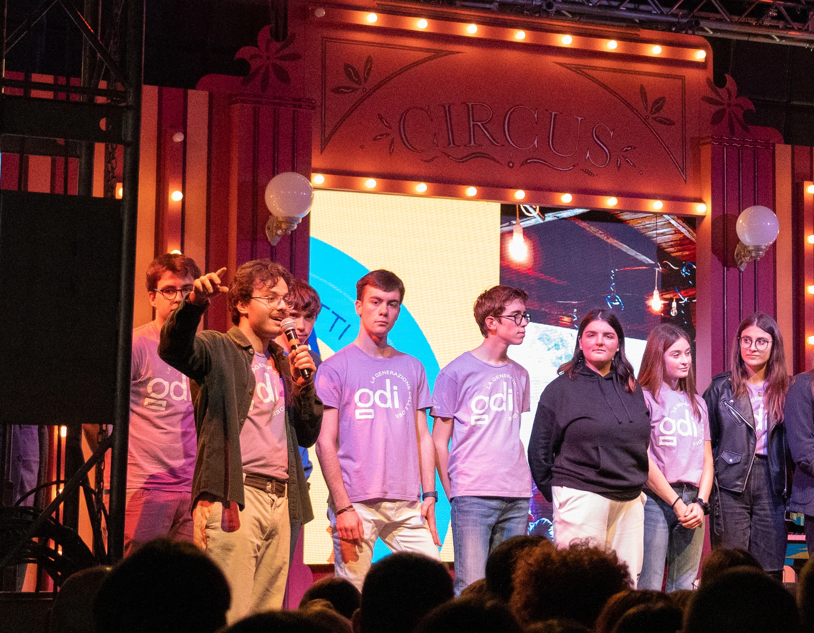
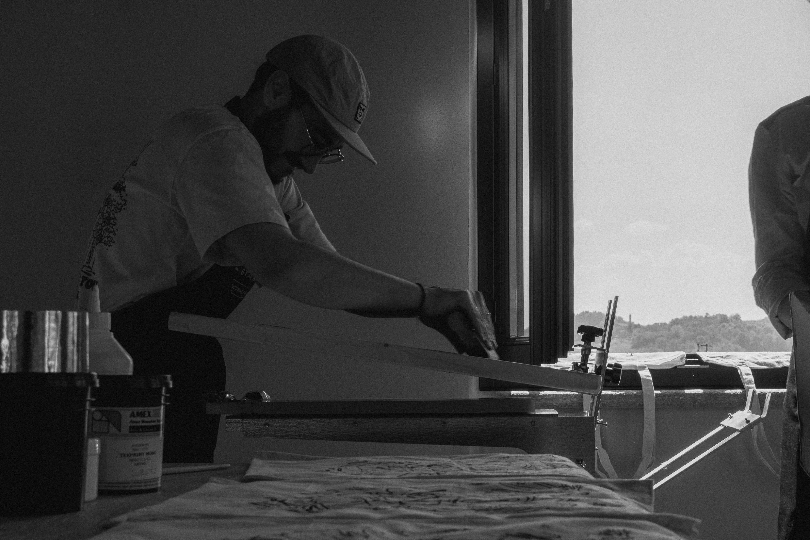
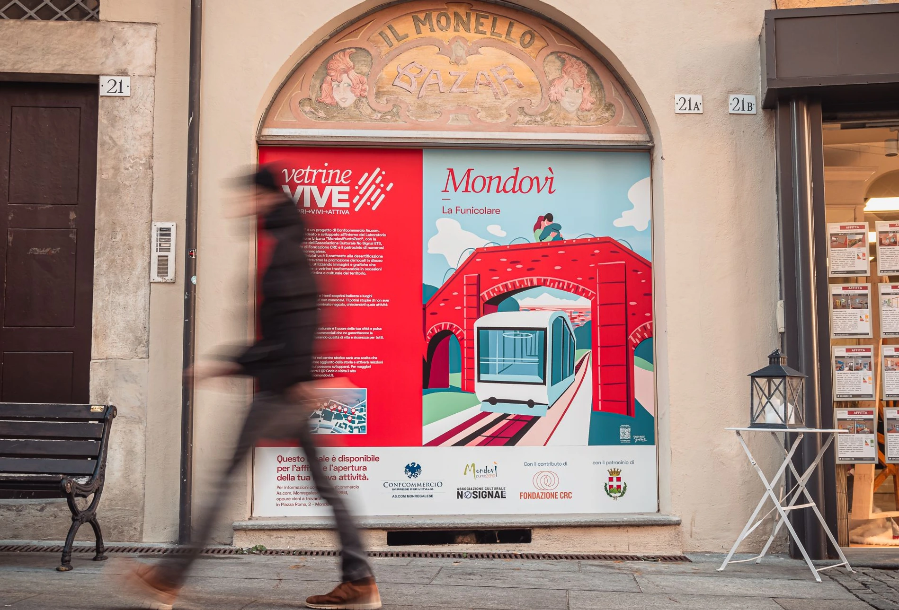
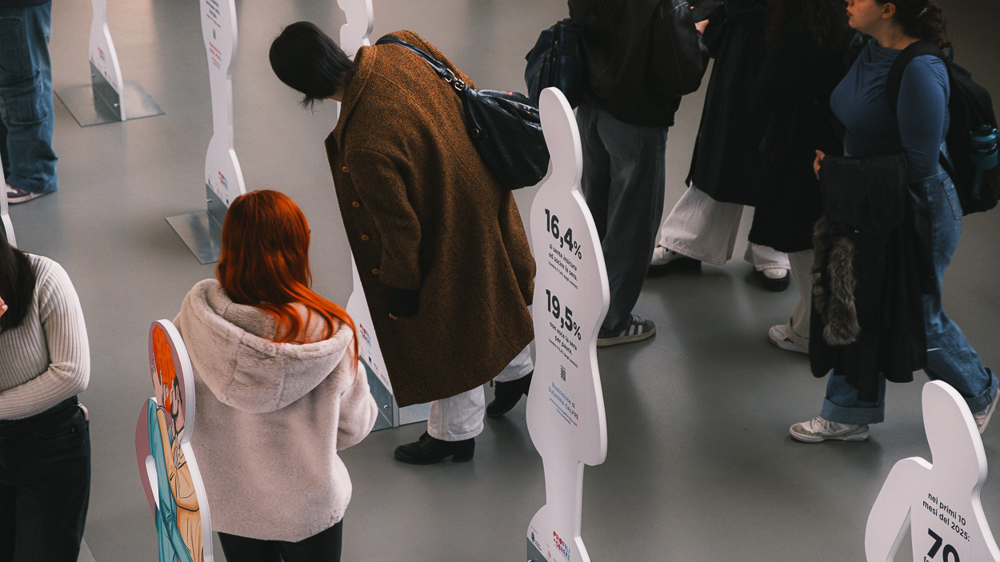
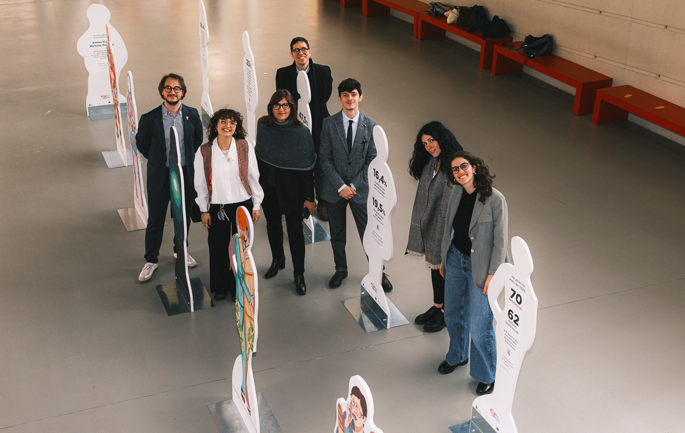
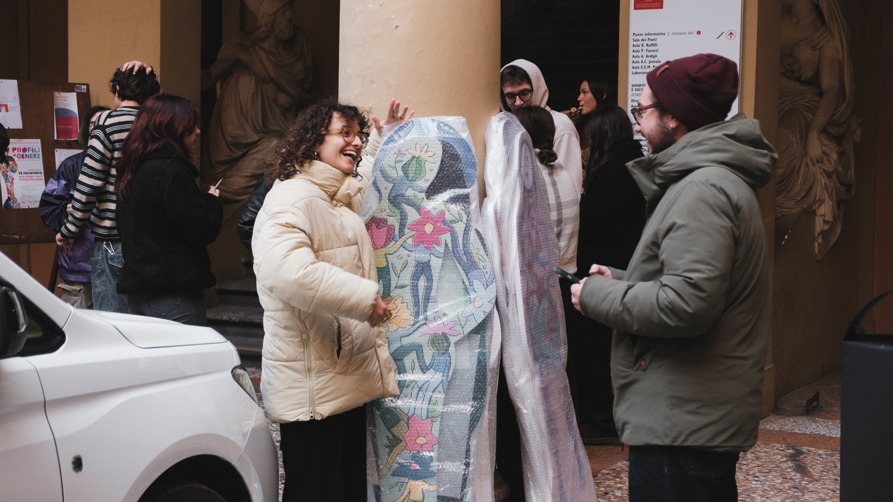

NoSignal ETS · Fondazione CRC — 2023 – Present
01 — Fondazione CRC
Advisory Board · Generazione delle Idee · Since 2025
Fondazione CRC is one of the most significant banking foundations in Piedmont, managing millions in annual grants across culture, education, welfare, and environmental projects in the Cuneo province.
In 2025 they launched the Advisory Board "Generazione delle Idee" — 20 young people from the territory, under 26, brought in to give the Foundation's board direct access to younger perspectives on social, cultural, and environmental issues. The group has a consultative role and presents a formal policy document to the General Council each year.
I am one of the 20. My commission focuses on Education and sports, a intersection I know very well.

02 — NoSignal ETS
NoSignal ETS is a cultural association based in Mondovì. It works at the intersection of art, social communication, and local community — organising events, exhibitions, and cultural projects for and with the territory.
My role is on the media side: photography, video, visual communication, and social content. But in practice the lines blur — I've been involved in producing events, curating exhibitions, and coordinating projects from start to finish.
Working for a cultural ETS with zero budget taught me something no agency ever could: how to make things look and feel good when there's almost nothing to work with.

Working with no budget taught me
something no agency could:
how to make things matter anyway.
A project to turn empty shop windows in Mondovì's historic centre into cultural displays — fighting commercial decline through illustration, design, and storytelling.
Vetrine Vive is a joint project between Confcommercio Monregalese and NoSignal ETS. The idea: take empty shop windows in Mondovì's historic centre: a symptom of commercial desertification and transform them into occasions for art and local storytelling.
Each window becomes a display, designed around a story about the city. The first edition featured an illustrated piece about the historic funicular, the tram that connects the upper and lower parts of Mondovì, with visual design, signage, and a QR code linking to local content.
My contribution: photography and media documentation. Making sure the project existed beyond the street it was installed on.
Full project → confcommerciomondovi.it
An itinerant exhibition on gender inequality: human-scale figures carrying data, stories, and illustrations. Shown in Forlì and Bologna, among other cities.


